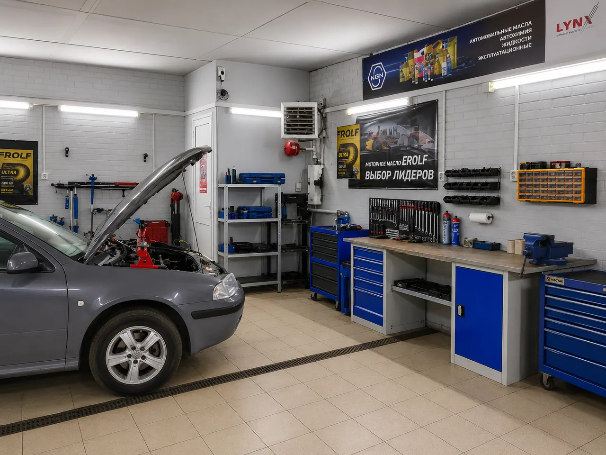

Износ рабочих поверхностей
Состояние оценивается по конкретному механизму, а не по пробегу в целом.
Безопасность движения
Если педаль, звук или траектория торможения изменились, причину нужно проверить до дальнейшей эксплуатации. По одному симптому нельзя заранее назначить замену.

Признаки
Состав проверки
Возможные причины
Состояние оценивается по конкретному механизму, а не по пробегу в целом.
Подклинивание или разница по сторонам может давать увод и перегрев.
Изменение педали требует проверки системы на утечки и воздух.
Вибрация и шум могут быть связаны с колесом, ступицей или подвеской.
Процесс
Для оценки
FAQ
Без проверки это подтвердить нельзя. При ухудшении торможения, утечке, сильном уводе или скрежете следует остановиться и связаться с сервисом.
Нет. Причина зависит от состояния поверхностей, загрязнения, установки, перегрева и других факторов.
В исходных данных нет подтверждённого ориентира для категории. Стоимость зависит от причины, работ и деталей и называется после проверки.
Связанные услуги
Опишите педаль, звук, скорость и траекторию. Сервис уточнит безопасный следующий шаг.